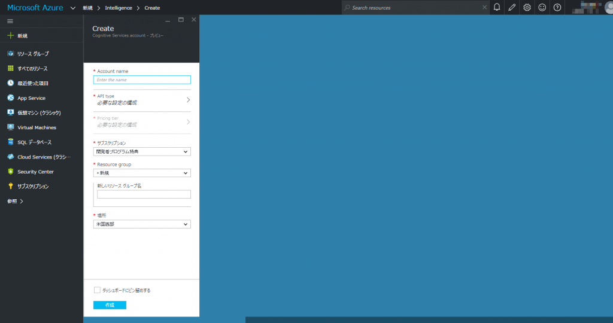

Build 2016お疲れ様でした。Xamarin 無償化など非常に大きな内容が多数ありました。
Microsoft Cognitive Servicesとは?
今回のBuildでの発表に**Microsoft Cognitive Services**がありました。 要するに、視覚、聴覚、声といった、人間の自然なコミュニケーション手段による操作を可能にするインテリジェントな22個のAPI群とのこと。 で、個人的に顔認識が一番目を引きました。仕事柄、画像認識や生体認証は一番身近ですので。 調べてみると、Azure上でのサービスとして展開されているようです。ライブラリが提供されるような形ではないのがちょっと残念でした。 私はAzureを使ったことがないので、環境構築も踏まえて勉強していきます。
環境構築
Microsoftアカウントはあるものとします。またサインしておきます。 Microsoft Cognitive Servicesに移動します。
{kind=link}
Let’s goで移動します。 必要なAPIにチェックを入れて、I agree to the Microsoft Cognitive Services Terms and Mircorosft Privacy Statement にチェック。そして、Subscribeをクリック。 Contact me with promotional offers and updates about Microsoft Cognitive Services はチェックは任意です。 

必要なAPIのSubscribeを確認したらBuy On AzureでAzureのポータルサイトに移動します。
{kind=link}
移動後、サブスクリプションが存在しない場合は下記の画面になります。 サインアップをクリックします。
{kind=link}
プランを選択します。無料試用版もあるので、それを選択するか、Visual Studio Dev Essentialsによる25ドルの無料クレジットもあります。
{kind=link}
必要な情報を入力します。 電話の確認も本人確認ですが、これはボットによる悪質な登録を除外する意味もあるでしょう。 また、無料試用版でもクレジットカードが必須です。あくまで本人確認のためです。
{kind=link}
サインアップ完了後、準備が始まります。画面中央のムービーでも見ていてください。
{kind=link}
準備完了。サービスの管理を開始するでポータルに戻ります。 しばらくすると、メールでAzure サブスクリプションの準備が整いましたという件名のメールが来ます。 なお私の場合、一度ポータルをログアウトしました。でないとサブスクリプションが表示されませんでしたので…
{kind=link}
{kind=link}
{kind=link}
Cognitive Services APIsと入力します。最初の数文字入力で候補が出ます。
{kind=link}
{kind=link}
{kind=link}
Account nameは任意の名前です。 API typeはFace APIを選択します。 サブスクリプションは先ほど作成したサブスクリプションを選択します。 Resource groupは既存のがなければ新規で作成します。 場所は米国西部しか選択できませんでした。 
{kind=link}
Pricing tierはF0 Freeを選択。 20コール/分、30000コール/月の制限ですが、十分でしょう。
{kind=link}
Legal termsにI Agreeで同意します。 最後に作成ボタンをクリック。
{kind=link}
{kind=link}
Conclusion
環境の構築が完了しました。 次回は実際にAPIを叩いて顔認識を行います。